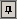
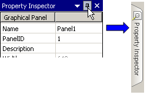
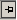

|
|
|
|
|
|
|
|
Select Auto-Hide to hide tool windows you are not using.
To auto-hide a tool window:
Click the pin icon

at the top right corner of the window.OR
Click the drop-down list icon  and select Auto Hide. The tool window displays as a tab.
and select Auto Hide. The tool window displays as a tab.

To change a tool window from auto-hide to Docking View:
Place your cursor over the tool window tab.
Click the pin icon

at the top right corner of the window, or click the drop-down list icon
When a window is in Auto-Hide mode, the drop-down list is not available.
The Toolchest window has two pin icons—one for the folder view and the other for the Toolchest window view. The pin in the folder view hides the folder view while the pin in the Toolchest window hides the entire window.